欢迎加入我的Python及Linux运维交流QQ群：==>646452633<==
一、cobbler介绍
1.前言
cobbler 是基于 python 语言开发的 pxe 二次封装的网络安装服务；可以多系统选自自动化安装配置。可以通过 Web 图形化界面配置，其安装包为 cobbler，在 epel 源上，配置过程中某些过程可能需要依赖互联网环境。
2.Cobbler 可以干什么
使用 Cobbler，无需进行人工干预即可安装机器。Cobbler 设置一个 PXE 引导环境（它还可以使用 yaboot 支持 PowerPC），并控制原装相关的所有方面，比如网络引导服务（DHCP 和 TFTP）与存储库镜像。当希望安装一台新机器时，Cobbler 可以：
1）使用一个以前定义的模板来配置 DHCP 服务（如果启用了管理 DHCP）
2）讲一个存储库（yum 或 rsync）建立镜像或解压缩一个媒介，以注册一个新操作系统
3）在 DHCP 配置文件中为需要安装的机器创建一个条目，并使用指定的参数（IP 和 MAC）
4）在 TFTP 服务目录下创建适当的 PXE 文件
5）重新启动 DHCP 服务来反应新的更改
6）重新启动机器以开始安装（如果电源管理已启动）
3.Cobbler 支持的系统和功能
Cobbler 支持众多的发行版：Redhat、Fedora、CentOS、Debian、Ubuntu 和 SUSE。当添加一个操作系统（通常通过使用 ISO 文件）时，Cobbler 知道如何解压缩合适的文件并调整网络服务，以正确引导机器。
Cobbler 可以使用 kickstart 模板。基于 Redhat 或 Fedora 的系统使用 kickstart 文件来自动化安装流程，通过使用模板，就会拥有基本 kickstart 模板，然后定义如何针对一种配置文件或机器配置而替换其中的变量。例如，一个模板可能包含两个变量 $domain 和 $machine_name。在 Cobbler 配置中，一个配置文件指定 domain=mydomain.com，并且每台使用该配置文件的机器在 machine_name 变量中指定其名称。该配置文件的所有机器都是用相同的 kickstart 安装且针对 domain=mydomain.com 进行配置，但每台机器拥有其自己的机器名称。仍然可以使用 kickstart 模板在不同的域中安装其他机器并使用不同的机器名称。
为了协助管理系统，Cobbler 可通过 fence_scripts 连接到各个电源管理环境。Cobbler 支持 apc_snmp、bladecenter、bullpap、drac、ether_wake、ilo、integrity、ipmilan、ipmitool、Ipar、rsa、virsh 和 wti。要重新安装一台机器，可运行 reboot system foo 命令，而且 Cobbler 会使用必要的和信息来为您运行恰当的 fence scripts（比如机器插槽数）。
除了这些特性，还可以使用一个配置管理系统（CMS）。有两种选择：该工具内的一个内部系统，或者现成的外部 CMS，比如 Chef 或 Puppet。借助内部系统，你可以指定文件模板，这些模板会依据配置参数进行处理（与 kickstart 模板的处理方式一样），然后复制到你指定的位置。如果必须自动将配置文件部署到特定机器，那么此功能很有用。
使用 koan 客户端，Cobbler 可从客户端配置虚拟机并重新安装系统。
4.Cobbler 提供的服务集成
PXE 服务支持
DHCP 服务管理
DNS 服务管理（可选bind，dnsmasq）
电源管理
Kickstart 服务支持
yum 仓库管理
TFTP （PXE 启动时需要）
Apache（提供 kickstart 的安装源，并提供定制化的 kickstart 配置）
同时，它和 apache 做了深度整合
5.PXE 工作流程图
因为 cobbler 基于 pxe 二次封装的，所以了解 PXE 工作流程也重要，图如下：
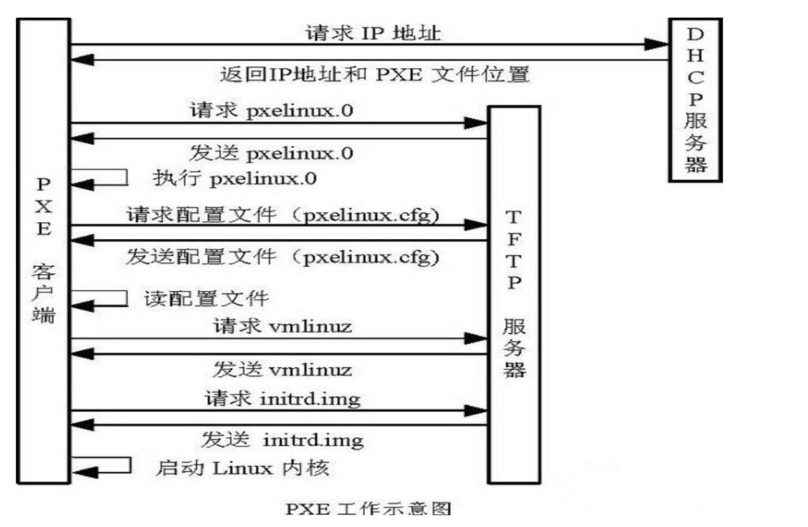
6.PXE + Kickstart 无人值守安装操作系统完整过程
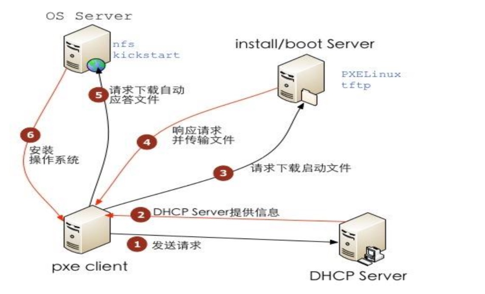
从上图可以看出：
- 配置服务，比如 DHCP、TFTP、（HTTP、FTP和NFS）
- 在 DHCP 和 TFTP 配置文件中填入哥哥客户端机器的信息
- 创建自动部署文件（比如 kickstart）
- 将安装媒介解压缩到 HTTP/FTP/NFS 存储库中
7.cobbler 的组成
Cobbler 的配置结构基于一组注册的对象。没个对象表示一个与另一个实体相关联的实体（该对象指向另一个对象，或者另一个对象指向该对象）。当一个对象指向另一个对象时，它就集成了被指向对象的数据，并可覆盖或添加更多特定信息。
以下对象类型的定义为：
发行版：表示一个操作系统。它承载了内核和 initrd 的信息，以及内核参数等其他数据；
配置文件：包含一个发行版、一个 kickstart 文件以及可能的存储库，还包含更多特定的内核参数等其他数据；
系统：表示要配给的机器。它把汗一个配置文件或一个镜像，还包含 IP 和 MAC；地址、电源管理（地址、凭据、类型）以及更为专业的数据等信息；
存储库：保存一个 yum 或 rsync 存储库的镜像信息；
镜像：可替换一个包含不属于此类别的文件的发行版对象（例如，无法分为内核和 initrd 的对象）；
基于注册的对象以及各个对象之间的关联，Cobbler 知道如何更改文件系统以反应具体配置。因为系统配置的内部是抽象的，所以可以仅关注想要执行的操作。8.cobbler 的工作流程
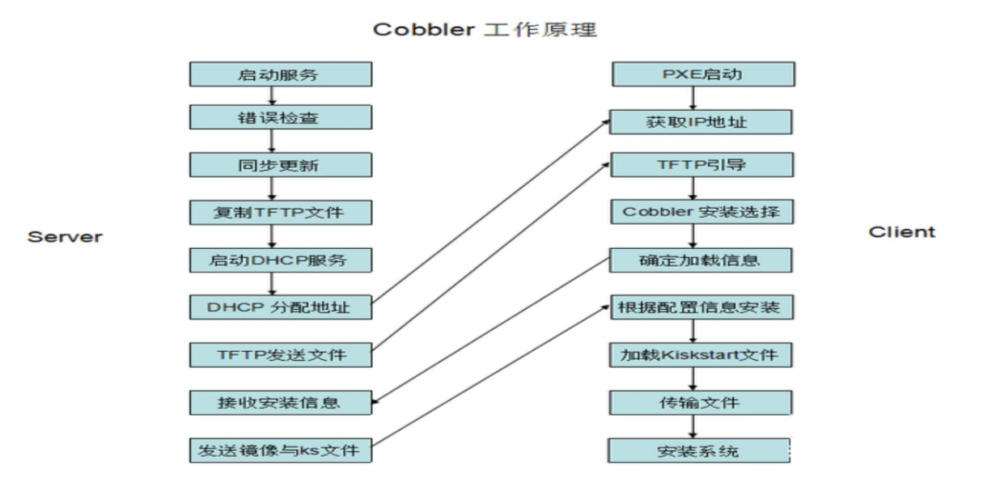二、cobbler 安装
必要服务
1）cobbler （cobbler 的核心）
2）httpd （提供 cobbler 的 web 界面）
3）dhcpd （为自动安装系统分配 IP 地址）
4）epel-release（为之提供yum源）
5）rsync （cobbler 需要同步信息）
6）cobbler-web （cobbler 的一个 web 插件）
7）xinetd （为 rsync 和 tftp 的守护进程）
8）tftp （传送安装的一些文件的 类似ftp）1.关闭防火墙和 selinux
1
2
3
4systemctl stop firewalld
systemctl disable firewalld
sed -i '/SELINUX/s/enforcing/disabled/' /etc/selinux/config
shutdown -r now
2.cobbler 安装
1.安装第三方源：
1 | yum install -y net-tools |
2.cobbler 安装，fence-agents 可不安装，tftp 通过 xinetd 管理
cobbler 和 apache 有深度配合所以安装 apache，不要安装 nginx 否则生成不了相关配置1
yum install -y httpd dhcpd tftp python-ctypes cobbler cobbler-web pykickstart fence-agents xinetd rsync
3.启动相关服务
1 | systemctl start httpd |
4.检查 cobbler 配置
cobbler 的帮助命令为 cobbler –help1
cobbler check
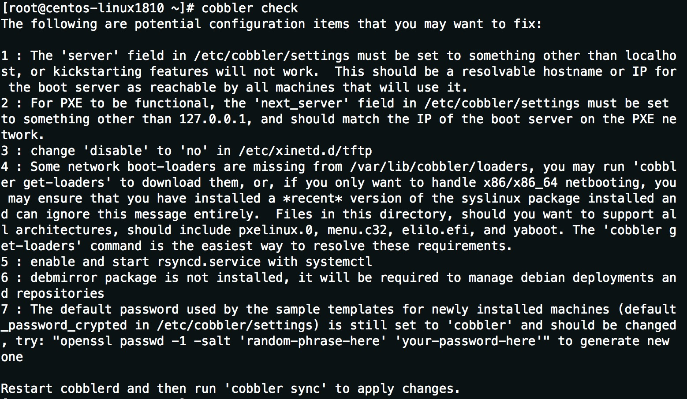
解决方法：
- /etc/cobbler/settings 中’server’配置成具体的服务器 ip 地址
- /etc/cobbler/settings 中’next_server’也修改为具体的 ip 地址
- /etc/xinetd.d/tftp 中’disable’从 yes 改为 no
- 运行’cobbler get-loaders’网络引导加载程序
- 开启rsync 服务并设置为开机启动，systemctl start rsyncd、systemctl enable rsyncd
- debian 系统需要安装 debmirror 包，这里是 centos 所以不用安装
- “openssl passwd -1 -salt ‘random-phrase-here’ ‘your-password-here’”生成新密码并修改配置/etc/cobbler/settings 中’default_password_crypted’字段
- 应用修改 systemctl restart cobblerd、cobbler sync
3.让 cobbler 管理 DHCP
1.编辑 cobbler 中 dhcp 模板
1
2
3
4
5
6cd /etc/cobbler
cp dhcp.template dhcp.template.org
sed -i '/^subnet/s/192.168.1.0/10.211.55.0/' dhcp.template
sed -i '/routers/s/192.168.1.5/10.211.55.1/' dhcp.temlpate
sed -i '/domain-name-servers/s/192.168.1.1/114.114.114.114/' dhcp.template
sed -i '/dynamic-bootps/s/192.168.1.100 192.168.1.254/10.211.55.100 10.211.55.254/' dhcp.template
把里面的信息修改为和自己同一个局域网的
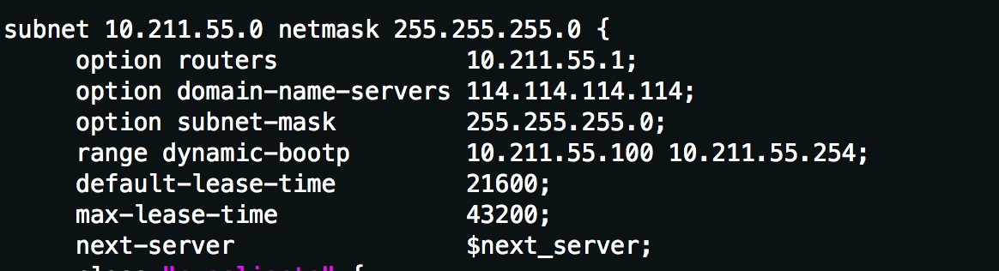
2.修改/etc/cobbler/settings 配置文件
1 | sed -i '/manage_dhcp:/s/0/1/' /etc/cobbler/settings |
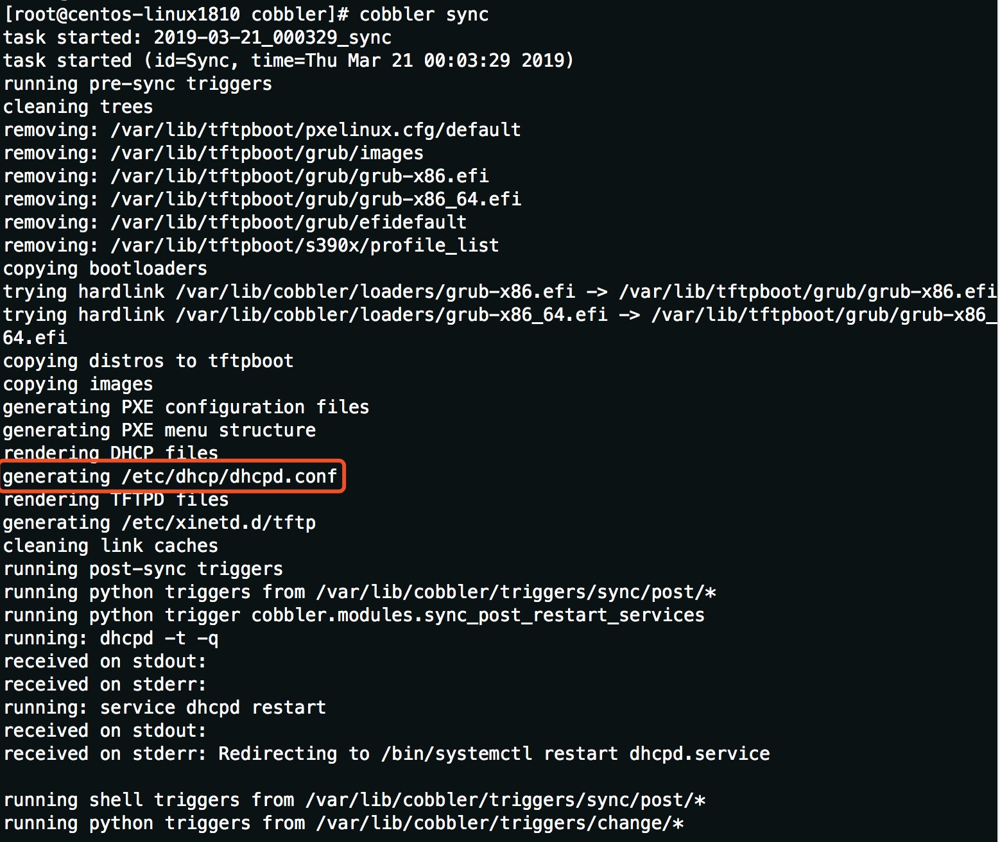1
cat /etc/dhcp/dhcpd.conf
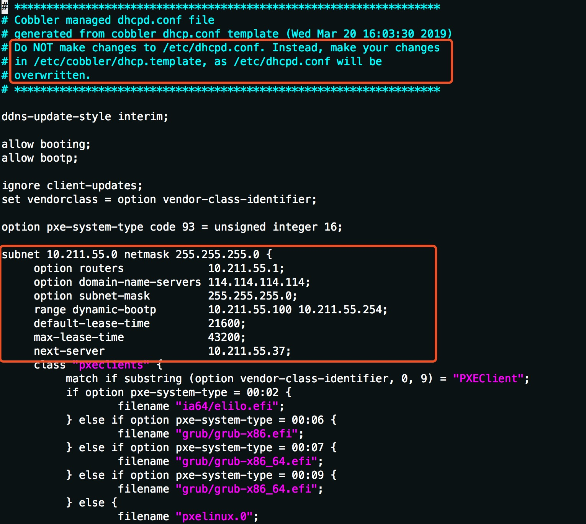
4.挂载 iso 镜像让 cobbler 处理生成
上传 iso 镜像文件到服务器，并挂载到目录1
2mkdir /mnt/iso
mount -o loop -t iso9660 CentOS-7-x86_64-Minimal-1810.iso /mnt/iso
用 cobbler 导入系统1
2
3cobbler import --path=/mnt/iso --name=CentOS-7.6-x86_64 --arch=x86_64
cobbler profile list
cobbler profile report
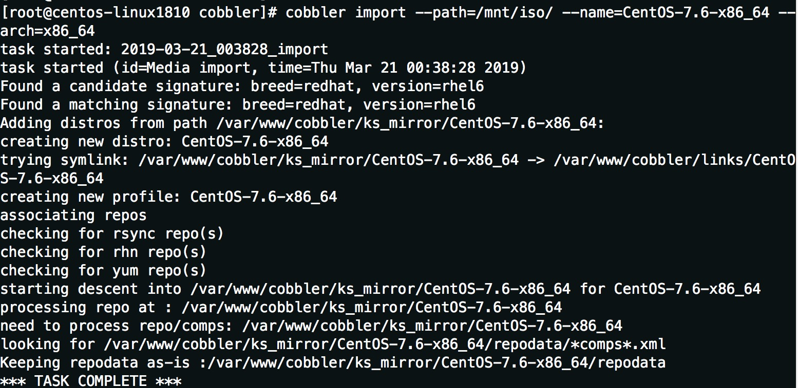
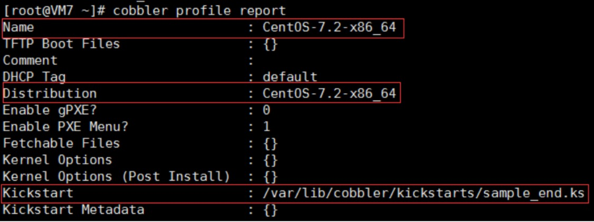
上面在导入系统的过程中 cobbler 帮我们自己生成了相关的配置，关联 dhcp，pxe安装菜单
生成 Kickstart 文件，可以看一下里面有哪些东西1
less /var/lib/cobbler/kickstarts/sample_end.ks
生成的 Kickstart 文件可以根据自己的需要进行修改，前提是要熟悉原生的 Kickstart 语法， 可以参看“kickstart 配置文件详解和 system-config-kickstart”文章，链接地址如下: http://blog.csdn.net/taiyang1987912/article/details/42176709
下图为 sample_end.ks 的内容：
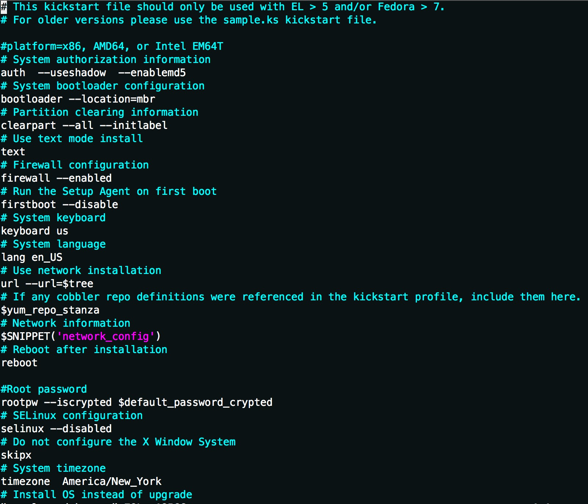
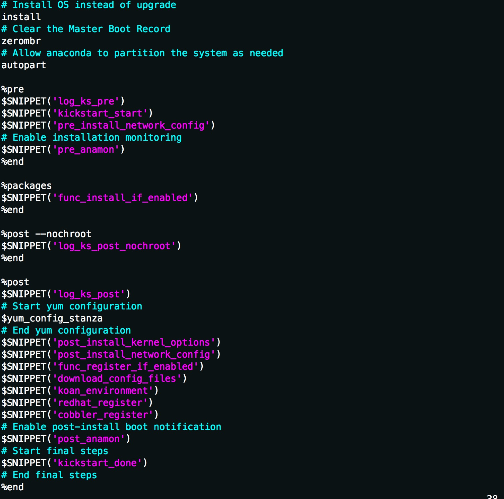
5.修改 cobbler 生成的 Kickstart 文件 sample_end.ks
一般安装系统的时候，最好按自己的需求进行修改一下：
- 禁止防火墙，设置时区为上海、关闭色Linux
- 按自己需求分区：在‘zerombr’字段添加
默认是自动分区的，要先把 autopart 注解掉，如 scsi 硬盘500G 当系统盘使用，数据盘在系统安装上之后，手工添加上去的，如果不指定硬盘则全部分配1
2
3
4part /boot --fstype="xfs" --size=500 --ondisk sda
part swap --fstype="swap" --size=1024 --ondisk sda
part / --fstype="xfs" --size=20000 --ondisk sda
part /disk1 --fstype="xfs" --grow --size=1 --ondisk sda
也可以使用逻辑卷方式：1
2
3
4
5
6part /boot --fstype="xfs" --size=500 --ondisk=sda
part pv.01 --grow --size=1 --ondisk=sda
volgroup centos --presize=4096 pv.01
logvol / --fstype="xfs" --size=50000 --name=root --vgname=centos
logvol swap --fstype="swap" --size=1024 --name=swap --vgname=centos
logvol /disk1 --fstype="xfs" --grow --size=1 --name=disk1 --vgname=centos
- 在‘%package’字段添加需要安装的软件包
%package 部分，安装包的选择，可以是 @core 这样的 group 的形式，也可以是这样 vim-* 包的形式。–ignoremissing：忽略缺少的软件包或组，而不是暂停安装来向用户询问中止还是继续安装
中文语言包:@chinese-support(centos7 中为 kde-l10n-Chinese 和 glibc-common)还有其它包 sysstat,iptraf,ntp,lrzsz,ncurses-devel,openssl-devel,zlib-develOp ,OpenIPMI-tools,mysql,nmap,screen,gcc,gcc-c++,automake,wget,curl, man,tree, automake,autoconf,dos2unix, rsync, vsftpd，net-tools 等1
2
3
4
5
6
7
8
9
10
11
12
13cd /var/lib/cobbler/kickstarts
mv sample_end.ks CentOS-7.6-x86_64.ks
cp CentOS-7.6-x86_64.ks CentOS-7.6-x86_64.ks.orig
sed -i 's/autopart/#autopart/' CentOS-7.6-x86_64.ks
sed -i '/firewall/s/enabled/disable/' CentOS-7.6-x86_64.ks
sed -i '/selinux/s/enabled/disabled/' CentOS-7.6-x86_64.ks
egrep "firewall|^timezone|selinux" CentOS-7.6-x86_64.ks
sed -i '/autopart/a\part /disk1 --fstype="xfs" --grow --size=1 --ondisk sda' CentOS-7.6-x86_64.ks
sed -i '/autopart/a\part swap --fstype="swap" --size=1024 --ondisk sda' CentOS-7.6-x86_64.ks sed -i '/autopart/a\part / --fstype="xfs" --size=20000 --ondisk sda' CentOS-7.6-x86_64.ks
sed -i '/autopart/a\part /boot --fstype="xfs" --size=500 --ondisk sda' CentOS-7.6-x86_64.ks grep 'zerombr' -A 7 CentOS-7.6-x86_64.ks
sed -i "/packages/a\ncurses-devel\nopenssl-devel\nOpenIPMI-tools\nscreen\nnet-tools" CentOS-7.6-x86_64.ks
sed -i "/packages/a\gcc\ngcc-c++\nvim\nlrzsz\nwget\ncurl\nman\ntree\nautomake" CentOS-7.6-x86_64.ks
sed -i "/packages/a\kde-l10n-Chinese\nglibc-common\nsysstat\niptraf\nntp\nlrzsz " CentOS-7.6-x86_64.ks
修改 CentOS-7.6-x86_64 的配置文件中 kickstart 的值1
2
3
4cobbler profile edit --name=CentOS-7.6-x86_64 --kickstart=/var/lib/cobbler/kickstarts/CentOS-7.6-x86_64.ks
systemctl restart cobblerd
sleep 2
cobbler sync
最终确保下面这些服务在运行，其中 25151 是 xmlrpc_port 端口1
netstat -anutlp | egrep "httpd|rsync|xinetd|dhcpd|25151"